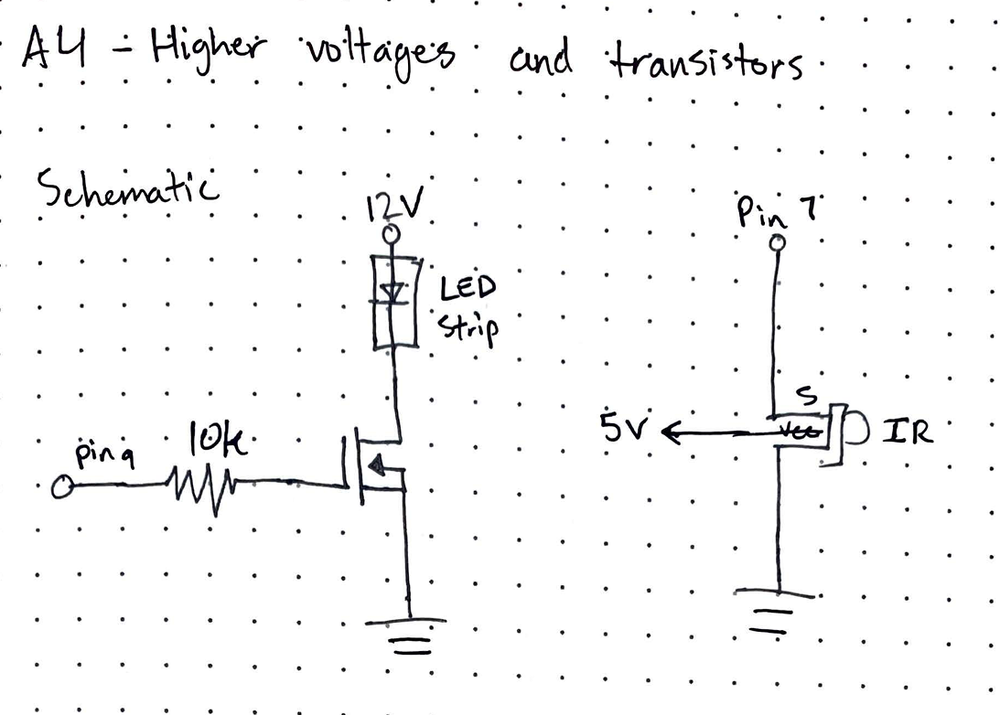
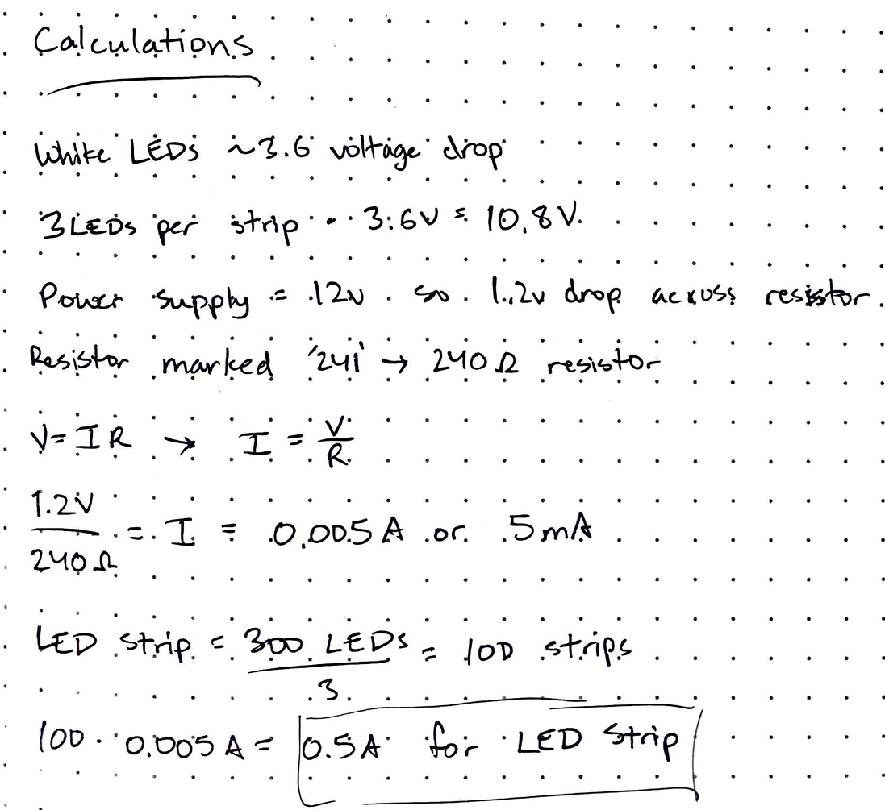
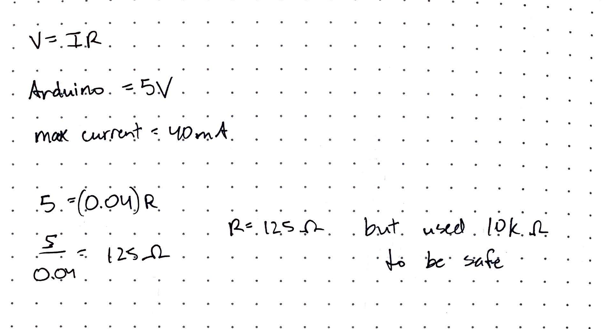
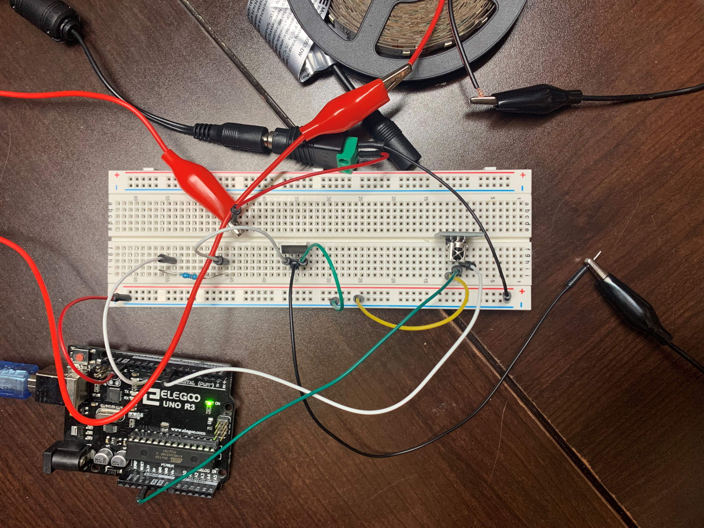

A4 - High(er) voltage and Transistors
Demo
Here is a gif of my LED Strip increasing and decreasing in brightness when pressing the IR Remote.

Design Requirements
- You must use a N-MOSFET transistor!
- You must use an external power supply!
- You must use an input sensor that uses a library, e.g. the remote, capacitive sensing, or the humidity sensor.
- Your schematic, code, and circuit must correspond to each other! If they don't match, we may deduct points for the part that doesn't correspond to the others. If your schematic is wrong or your circuit does not match we will deduct up to one point.
- All calculations must be explained, and at crucial spots in the circuit you must explain expected voltages and currents. If we cannot read your calculations (because they are handwritten) we will deduct points.
- The transistor can handle a max current. Justify how much current you are using.
- Your Arduino code should use at least analogWrite(). During pinMode() initializing, explain the state the pin is in. Within your code, for each line of code with content (i.e. not lines of code which are only white space, a curly brace, etc), add a short comment (// like this) above the line of code explaining what the line does.
Schematic and Calculations
Here is a schematic of my circuit and my calculations.
  The MOSFET transistor functions depending on the voltage, not current so I just chose to create a 0.5A safe current with the 10k ohm resistor and the arduino's 5V voltage. With the pinMode() initializing, the pin is set to HIGH because it is an output.
Circuit
Code Snippet
/* Worked with Franklin Huynh on this assignment */
#include //include IRremote library
const int RECV_PIN = 7; // Set up the IR Receiver to pin 7
IRrecv irrecv(RECV_PIN); // Create an instance of the IR Receiver
decode_results results; // Create an instance of the results
void setup(){
Serial.begin(9600); // Initialize serial at 9600 baud
irrecv.enableIRIn(); // Enables IR input to be detected with the receiver
irrecv.blink13(true); // Enable blinking the LED when it's receiving signals
pinMode(9, OUTPUT); // Initialize pin 9 as output
}
void loop(){
if (irrecv.decode(&results)){ // Checks if there is an IR signal received
String code = String(results.value, HEX); // Converts and stores the resulting IR signal into a variable
Serial.println(code); // Prints the string on the serial monitor
/* If the rewind button is pressed, the LED strip will turn on at max brightness,
* decreasing in 0.5 second intervals to a dim brightness.
* If the fast forward button is pressed, the LED strip will turn on at a dim brightness
* and increase in 0.5 second intervals to max brightness.
*/
if (code == "ff22dd") { // If the rewind button is pressed
analogWrite(9, 255); // Turn the LED Strip to brightness of 255
delay(500); // 0.5 second delay
analogWrite(9, 205); // Turn the LED Strip to brightness of 205
delay(500); // 0.5 second delay
analogWrite(9, 155); // Turn the LED Strip to brightness of 155
delay(500); // 0.5 second delay
analogWrite(9, 105); // Turn the LED Strip to brightness of 105
delay(500); // 0.5 second delay
analogWrite(9, 55); // Turn the LED Strip to brightness of 55
delay(500); // 0.5 second delay
analogWrite(9, 15); // Turn the LED Strip to brightness of 15
delay(500); // 0.5 second delay
} else if (code == "ffc23d") { // If the fast forward button is pressed
analogWrite(9, 15); // Turn the LED Strip to brightness of 15
delay(500); // 0.5 second delay
analogWrite(9, 55); // Turn the LED Strip to brightness of 55
delay(500); // 0.5 second delay
analogWrite(9, 105); // Turn the LED Strip to brightness of 105
delay(500); // 0.5 second delay
analogWrite(9, 155); // Turn the LED Strip to brightness of 155
delay(500); // 0.5 second delay
analogWrite(9, 205); // Turn the LED Strip to brightness of 205
delay(500); // 0.5 second delay
analogWrite(9, 255); // Turn the LED Strip to brightness of 255
delay(500); // 0.5 second delay
}
irrecv.resume(); // Reset receive to resume IR detection
}
}